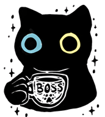

Opções pensadas para reduzir desconfortos e evitar bebidas ricas em frutose.
Por que não faz mal: Não contém suco de frutas; apenas infusão suave de pepino e alecrim na água.
Por que não faz mal: Infusão de hortelã com poucas gotas de limão Taiti; sem suco concentrado de fruta.
Por que não faz mal: Café puro, naturalmente livre de frutose.
Por que não faz mal: Infusões de ervas e raízes, livres do açúcar de frutas.
Por que não faz mal: Café filtrado, sem frutose; opção clássica e segura.
Por que não faz mal: Feito com leite e essência de baunilha, sem sucos de frutas.
